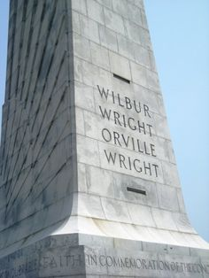

Wright brothers, American brothers, inventors, and aviation pioneers who achieved the first powered, sustained,
and controlled airplane flight (1903).
Wilbur Wright (April 16, 1867, near Millville, Indiana, U.S.—May 30, 1912, Dayton, Ohio) and his brother
Orville Wright (August 19, 1871, Dayton—January 30, 1948, Dayton) also built and flew the first fully practical
airplane (1905). Orville’s biography of Wilbur appeared in the 14th edition of the Encyclopædia Britannica
(see the Britannica Classic: Wilbur Wright).
Wright brothers, American brothers, inventors, and aviation pioneers who achieved the first powered, sustained,
and controlled airplane flight (1903).
Wilbur Wright (April 16, 1867, near Millville, Indiana, U.S.—May 30, 1912, Dayton, Ohio) and his brother
Orville Wright (August 19, 1871, Dayton—January 30, 1948, Dayton) also built and flew the first fully practical
airplane (1905). Orville’s biography of Wilbur appeared in the 14th edition of the Encyclopædia Britannica
(see the Britannica Classic: Wilbur Wright).
During this period of success for Glenn Curtiss, in 1908, the Wright Brothers saw fit to warn him not to infringe
on their patent by either profiting from flying aircraft that used ailerons, or selling them. See, after the
Wrights had failed to secure a patent in 1903, they hired a patent attorney who was able to secure them one in
1904 for a ‘flying machine.’ As part of the patent, it laid claim to a new method of controlling a flying machine
(powered or not), describing wing-warping, the Wright’s less-workable precursor to ailerons. But when other aviators
developed and used ailerons to achieve the same control, the Wrights claimed that it was infringing on their
patent and the methods described in it, and the US courts agreed that the Wright patent covered ailerons..